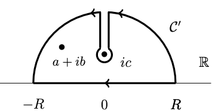

Homework 05
1. Integral, differentiability and decay rate
Compute this generalization of an integral we did in class:
\[ I_{n,a}(k) = \int^{∞}_{−∞} \frac{ e^{ikx} }{ (x^2 + a^2)^n} dx \]
where \(k, a \in {\mathbb{R}}, a > 0\) and \(n \in {\mathbb{Z}}, n \geq 1\). What is the degree of differentiability of \(I_{n,a}(k)\) with respect to \(k\)? How does this relate to the decay of the integrand?
Compute the Integral:
Complex function \(f(z) = \frac{e^{ikz}}{(z^2 + a^2)^n}\) has poles at \(z = \pm i a\).
The residue at \(z = + i a\) pole
\[ \text{Res}(f, ia) = \frac{1}{(n-1)!} \lim_{z \to ia} \frac{d^{n-1}}{dz^{n-1}} \left[ (z - ia)^n f(z) \right] \]
Construct a semicircular contour in the upper half-plane that consists of a line segment \(C_1\) from \(−R\) to \(R\) and a semicircular arc \(C_2\) of radius \(R\) centered at the origin.
The integral over the contour \(C\) is:
\[ \int_C f(z) dz = 2\pi i \times \text{Res}(f, ia) \]
As \(R \to \infty\), the integral over \(C_2\) vanishes for \(k>0\) due to the exponential decay of \(e^{ikz}\) in the upper half-plane.
The original integral \(I_{n,a}(k)\) is equal to the integral over \(C_1\):
\[ I_{n,a}(k) = 2\pi i \times \text{Res}(f, ia) \]
Degree of Differentiability
\[ I_{n,a}'(k) = \int^{∞}_{−∞} \frac{ ix e^{ikx} }{ (x^2 + a^2)^n} dx \]
The corresponding complex function
\[ f_k(z) = \frac{i z e^{ikz}}{(z^2 + a^2)^n} \]
has poles at \(z = \pm i a\).
The function \(I_{n,a}(k)\) will be infinitely differentiable with respect to \(k\) because the exponential function \(e^{ikx}\) is smooth and the denominator does not depend on \(k\).
Relation to the Decay of the Integrand:
The decay of the integrand as \(x \to \pm\infty\) is crucial for the convergence of the integral. The factor \((x^2 + a^2)^{-n}\) ensures that the integrand decays sufficiently fast at infinity for the integral to converge.
The faster decay of the integrand at infinity, which is ensured by a higher \(n\), means that \(I_{n,a}(k)\) will be more regular (i.e., higher degree of differentiability).
2. Integral of a keyhole contour
Compute the following integral by a choice of keyhole contour, where \(a, b, c ∈ {\mathbb{R}}\) and \(b, c > 0\):
\[ I(a, b, c) = \int^∞_{−∞} dx \frac{\log(x^2 + c^2)}{ (x − a)^2 + b^2} \]
The complex function
\[ f(z) = \frac{\log(z^2 + c^2)}{ (z − a)^2 + b^2} = \frac{\log(z+ ic)}{ (z − a)^2 + b^2} + \frac{\log(z - ic)}{ (z − a)^2 + b^2} \]
may have branch point \(𝑧 = \pm 𝑖c\) and have poles at \(a \pm ib\).
Consider the contour integral \(\oint_C dz f(z)\)in the complex plane where \(𝐶\) is a semicircle of radius \(R\) in the upper half-plane with a detour down and up the imaginary axis about the branch point \(z=ic\).

The function \(\log(z + ic)\) is holomorphic in the upper half plane if we choose its branch cut to lie in the lower half plane, so the integrand is holomorphic inside the contour of \(C\) except for a simple pole at \(a + ib\).
\[ \oint_C dz \frac{\log(z+ ic)}{ (z − a)^2 + b^2} = 2 \pi i \frac{\log(a+ib+ic)}{2ib} = \frac{\pi}{b} \log(a+ib+ic) \]
The function \(\log(z - ic)\) has a branch cut in the upper half plane. We have
\[ \oint_C dz \frac{\log(z - ic)}{ (z − a)^2 + b^2} = \frac{\pi}{b} \log(a + ib - ic) + \int_{ic}^{\infty} \frac{ \log (iy-ic+\epsilon) - \log (iy-ic+\epsilon)}{ (z-a)^2+b^2} \]
Since the contribution from the big semi-circle tends to zero as \(R → ∞\) and from the small circle around \(ic\) as its radius tends to zero. And
\[ \int_{ic}^{\infty} \frac{ \log (iy-ic+\epsilon) - \log (iy-ic+\epsilon)}{ (z-a)^2+b^2} = -2 \pi \int_c^{\infty}dy \frac{1}{(iy-a)^2+b^2} = - \frac{\pi}{b}\log \frac{a+ib-ic}{a-ib-ic} \]
So
\[ \begin{align*} I(a, b, c) &= \int^∞_{−∞} dx \frac{\log(x^2 + c^2)}{ (x − a)^2 + b^2} \\ &= \frac{\pi}{b} \log(a+ib+ic) + \frac{\pi}{b} \log(a+ib-ic) - - \frac{\pi}{b}\log \frac{a+ib-ic}{a-ib-ic} \\ &= \frac{\pi}{b} \log(a^2+(b+c)^2) \end{align*} \]
3. Integral and Laurent expansion
Consider the integral
\[ \int_C dz \frac{z + 2}{ z^2 − 9} \]
where \(C\) is a positively-oriented circle of radius 4. Compute this integral by taking the sum of the residues inside the circle, and then again by computing the “residue at \(∞\)” meaning using the outer Laurent expansion
The integrand
\[ f(z) = \frac{z + 2}{z^2 - 9} \]
have simple poles at \(z =\pm 3\).
\[ \text{Res}(f, 3) = \lim_{z \to 3} (z - 3) \frac{z + 2}{z^2 - 9} = \frac{5}{6} \]
\[ \text{Res}(f, -3) = \lim_{z \to -3} (z + 3) \frac{z + 2}{z^2 - 9} = \frac{1}{6} \]
By the residue theorem, the integral over the contour \(C\) is:
\[ \int_C f(z) , dz = 2\pi i \times (\text{Res}(f, 3) + \text{Res}(f, -3)) = 2\pi i \]
Using the outer Laurent expansion
\[ \frac{z + 2}{z^2 - 9} = \frac{1}{z} + O[\frac{1}{z^2}] \]
So using residue at \(∞\)
\[ \text{Res}(f, ∞) = 1 \] \[ \int_C f(z) , dz = 2\pi i \times \text{Res}(f, ∞) = 2\pi i \]
4. Analytically continuing
Compute the integral
\[ \int^{2π}_{0} \frac{dθ}{2 − \cos θ } \]
by analytically continuing the integrand and then using residues.
Perform a change of variables to convert the integral into a contour integral in the complex plane.
Let \(z = e^{i\theta}\). Then, \(dz = ie^{i\theta}d\theta = izd\theta\) and \(d\theta = \frac{dz}{iz}\). Also, \(\cos \theta = \frac{1}{2}(e^{i\theta} + e^{-i\theta}) = \frac{1}{2}(z + \frac{1}{z})\).
Substituting these into the integral, we get:
\[ \int^{2π}_{0} \frac{dθ}{2 − \cos θ } = \int_{|z|=1} \frac{1}{2 - \frac{1}{2}(z + \frac{1}{z})} \times \frac{dz}{iz} \]
Simplifying this, we have:
\[ \int_{|z|=1} \frac{dz}{2iz - \frac{1}{2}i(z^2 + 1)} \]
To find the poles of the integrand, we set the denominator to zero:
\[ iz - \frac{1}{2}i(z^2 + 1) =0 \]
\[ z_1=2-\sqrt{3}, z_2=2+\sqrt{3} \]
\(z_1\) is within the contour, so
\[ \int_{|z|=1} \frac{1}{2 - \frac{1}{2}(z + \frac{1}{z})} \times \frac{dz}{iz} = 2 \pi i \frac{2}{i(z_2-z_1)} = \frac {2 \pi}{\sqrt 3} \]
5. Gamma function
The Gamma function is usually defined as
\[ Γ(z) = \int^∞_0 t^{z−1}e^{−t}dt \]
(This kind of integral is known as a Mellin transform, in this case of \(e^{−t}\), and we can equivalently write it as a two-sided Laplace transform of \(e^{−e^s}\) by taking \(s = \log t\).) Verify this integral exists for \(\Re(z) > 0\) and that
\[ zΓ(z) = Γ(z + 1) \] \[ Γ(n + 1) = n! \]
The first relation can be iterated to analytically continue the \(Γ\) function to the whole complex plane, except for poles at the nonpositive integers. However, there is a way to analytically continue it all at once:
Split the integral into two parts \(\int^∞_ 1 +\int^1_0\) . Show that the first part yields an entire function in \(z\), and that the second part equals
\[ \sum_{n=0}^\infty \frac{(−1)^n}{n!} \frac{1}{ z + n} \]
which is an entire meromorphic function with poles at the non-positive integers, thus giving an analytic continuation of \(Γ\) as a meromorphic function on all of \({\mathbb{C}}\).
To verify the properties of the Gamma function and its analytic continuation, we’ll break down the problem into parts.
Existence
We prove this integral converges absolutely.
\[ \int\limits_0^\infty |t^{z-1}e^{-t}| dt = \int\limits_0^\infty t^{\operatorname{Re} z-1}e^{-t} dt \]
For \(z \in {\mathbb{R}}\),
\[ \int\limits_0^\infty t^{z-1}e^{-t}dt = \int\limits_0^1 t^{z-1}e^{-t}dt + \int\limits_1^\infty t^{z-1}e^{-t}dt \]
we have for large \(N \le t,\) \(t^{z-1}e^{-t}\le e^{-t/2}\)
\[ 0\le t\le N \implies t^{z-1}e^{-t}\le t^{z-1} \;,\;\;\text{and}\;\; \int\limits_0^N t^{z-1}dt=\left.\frac{t^z}z\right|_0^N=\frac{N^z}{z} \]
\[ N \le t\implies t^{z-1}e^{-t}\le e^{-t/2} \;,\;\;\text{and}\;\; \int\limits_N^\infty e^{-t/2} dt=\left. -2 e^{-t/2}\right|_N^\infty= 2e^{-N/2} \]
So
\[ \int\limits_0^\infty |t^{z-1}e^{-t}| dt \le \infty \]
Therefore, this integral exists for \(\Re(z) > 0\).
\(zΓ(z) = Γ(z + 1)\)
By definition:
\[ z\Gamma(z) = z \int_{0}^{\infty} t^{z-1}e^{-t} dt \]
Using integration by parts, we get:
\[ \begin{aligned} z\Gamma(z) &= \left. t^z e^{-t} \right| _{0}^{\infty} - \int_{0}^{\infty} t^{z} (-e^{-t}) dt \\ &= \int_{0}^{\infty} t^z e^{-t} dt \\ &= \Gamma(z + 1) \end{aligned} \]
\(Γ(n + 1) = n!\)
\[ {\displaystyle {\begin{aligned}\Gamma (1)&=\int _{0}^{\infty }t^{1-1}e^{-t}\,dt\\&=\int _{0}^{\infty }e^{-t}\,dt\\&=1.\end{aligned}}} \]
By induction we have \(Γ(n + 1) = n!\)
Splitting
Now, to analytically continue the Gamma function, we split the integral into two parts:
\[ \Gamma(z) = \int_{1}^{\infty} t^{z-1}e^{-t} dt + \int_{0}^{1} t^{z-1}e^{-t} dt \]
- The first part \(\int_{1}^{\infty} t^{z-1}e^{-t} dt = (\int_{1}^{N} + \int_{N}^{\infty}) t^{z-1}e^{-t} dt\) converges for all \(z\) and is an entire function in \(z\).
- The second part \(\int_{0}^{1} t^{z-1}e^{-t} dt\) ) can be expressed as a power series using the Taylor expansion of \(e^{-t}\) :
\[ \int_{0}^{1} t^{z-1}e^{-t}dt = \int_{0}^{1} t^{z-1} \sum_{n=0}^{\infty} \frac{(-1)^n}{n!} t^n dt = \sum_{n=0}^{\infty} \frac{(-1)^n}{n!} \int_{0}^{1} t^{z + n - 1} dt = \sum_{n=0}^{\infty} \frac{(-1)^n}{n!} \frac{1}{z + n} \]
This series converges for ( z ) not a non-positive integer and provides an analytic continuation of \(\Gamma\) as a meromorphic function on all of \(\mathbb{C}\), with poles at the non-positive integers.
6. Gamma relation
Prove the relation
\[ Γ(z)Γ(1 − z) = \frac{π} {\sin πz} \]
by combining the two Gamma integrals into
\[ Γ(z)Γ(1 − z) = \int^∞_0 dt \frac{t^{z−1}}{t + 1} \]
and evaluating this by residues.
\[ \Gamma(z) = \int_{0}^{\infty} t^{z-1}e^{-t} dt \]
For fixed \(t\)
\[ \Gamma(1 - z) = \int_{0}^{\infty} t^{-z}e^{-t} dt = \int_{0}^{\infty} u^{-z}e^{-u} du = t \int_{0}^{\infty} (vt)^{-z}e^{-vt} dv \]
By combining these two
\[ Γ(z)Γ(1 − z) = \int^∞_0\int^∞_0 e^{-t(1+v)} v^{-z} dvdt = \int^∞_0 dv \frac{v^{z−1}}{v + 1} = \int^∞_0 dt \frac{t^{z−1}}{t + 1} = \int^∞_{-∞} dt \frac{e^{zx}}{ 1+e^x } \]
Complex function
\[ \frac{e^{zx}}{ 1+e^x } \]
have pole at \(\pi i\). Consider a contour \(C_R\) in the complex plane with vertices at \(R\), \(−R\), \(R+2πi\), and \(−R+2πi\), as \(R\) tends to infinity. We have
\[ {\displaystyle \int _{C_{R}}{\frac {e^{xz}}{1+e^{x}}} dx=-2\pi ie^{z \pi i}} \] \[ \int _{C_{R3}}{f(x,z)} dx = -e^{2\pi i z} \int _{C_{R1}}{f(x,z)} dx \]
The right and left vertical sides of the rectangle tend to 0 as \(R \to \infty\) for \(z \in (0,1)\).
\[ \int^∞_{-∞} dt \frac{e^{zx}}{ 1+e^x } = \frac{-2\pi ie^{z \pi i}}{1-e^{2\pi i z}} = \frac{\pi}{\sin \pi z} \]
By analytic continuation, this relation is true for all \(z \in {\mathbb{C}}/\ {\mathbb{Z}}\)